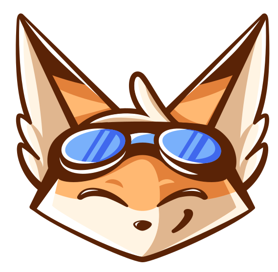
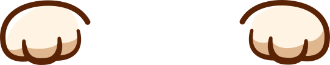

После оплаты вы будете переадресованы обратно на этот сайт, где для вас будет сгенерирован уникальный ключ лицензии. Для скачивания Naninovel понадобится создать учётную запись и ввести данный ключ.
Обратите внимание, что техническая поддержка доступна только на английском языке. По вопросам приобретения и регистрации можно обращаться на русском: info@naninovel.com.